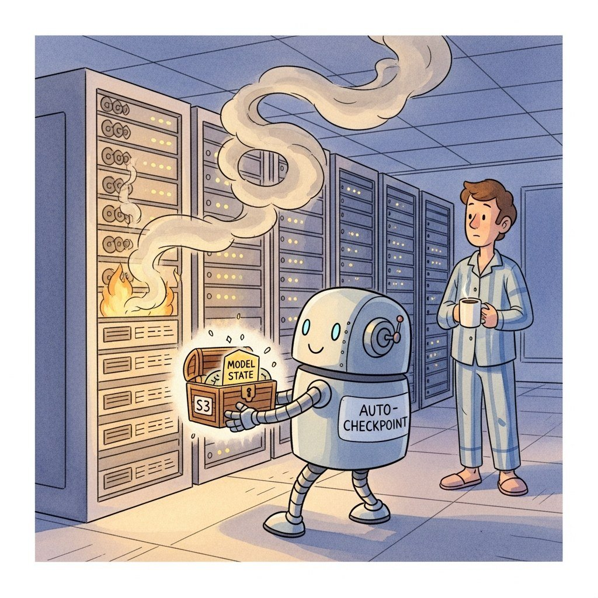

"Sixteen thousand GPUs, a seven-hour MTBF, and one heroic checkpoint script standing between you and a wasted week. Save early, save sharded, save async."
Sched, 3 a.m. Checkpoint Resurrection AI Agent
The algorithms in Sections 59.1-59.4 are necessary but not sufficient. A real frontier training run spans weeks across thousands of nodes; in that window something will break. The operational discipline of production training has four pillars: checkpointing (so that a failure costs minutes, not days), elastic scheduling (so that dead nodes can be swapped in mid-run), observability (so that a quietly degrading run is caught before it wastes a week of compute), and post-mortem analysis (so that every failure improves the next run). The story of every published frontier training run is a story of these four pillars; the difference between a successful and a wasted run is rarely in the algorithm and almost always in the infrastructure.
Prerequisites
This section assumes the distributed-training patterns from Section 59.1 through Section 59.4 and the LLM-pretraining lifecycle from Section 6.1. Operational-observability fundamentals are covered in detail later in the book.
59.5.1 Mean Time Between Failures
The 419-failure number from the Llama-3 405B training paper became a meme in cluster-ops circles. The Meta paper notes that 78% of the failures were GPU-related, but the most-shared graph in the paper is the one showing a clear thermal correlation with rack-level air-handler outages, meaning a meaningful fraction of frontier model training cost is essentially a sophisticated HVAC problem.
The numerical reality of large-scale training: at any non-trivial cluster size, hardware failures are continuous, not exceptional. Empirical per-node failure rates from public post-mortems:
| Run / Cluster | GPUs | Run duration | Failures observed | MTBF / 1k GPUs |
|---|---|---|---|---|
| OPT-175B (Meta, 2022) | 992 A100 | 2 months | ~50 (per official log) | ~30 hours |
| BLOOM-176B (BigScience, 2022) | 384 A100 | 3.5 months | 30+ | ~75 hours |
| Llama-3 405B (Meta, 2024) | 16,000 H100 | 54 days | 419 (Meta paper) | ~7.7 hours |
| GPT-4 (OpenAI, 2023, est) | ~25,000 A100 | ~3 months | not public | est ~12 hours |
The Llama-3 paper reports 419 hardware interruptions in 54 days on 16,000 H100s, or roughly one node failure every 3 hours of wall-clock time across the cluster. The dominant causes were GPU hardware failures (58%), GPU HBM failures (17%), network switch failures (9%), and host system issues (16%). All of these are time-correlated to silicon temperature, which is why Meta's cluster monitoring includes a per-rack thermal model.
At a 7-hour MTBF, a 30-day training run will experience roughly 100 hardware interruptions. If each one costs an hour to recover from, that is 100 hours of lost compute, or 14% of the run. The same algorithmic improvement that takes another 14% off the compute (e.g., a 1.5x MFU improvement) is a year-long research project; the infrastructure improvement (faster checkpoints, automatic node replacement) is a quarter of engineering effort. Frontier teams spend roughly half their distributed-training engineering on infrastructure precisely because the leverage is higher.
59.5.2 Checkpointing Strategies

A checkpoint is the only way to bound the cost of a failure. The state of the art is sharded asynchronous checkpoints written every few minutes to a parallel file system.
59.5.2.1 What Goes Into a Checkpoint
A complete checkpoint must capture everything needed to bit-identically resume training: model parameters, optimizer state (master weights, $m$, $v$, scheduler step), data-loader state (current shard, sample index, RNG seed), and the random number generator state of every rank. Forgetting any one of these creates subtle divergence after restart: the most common bug is forgetting the data-loader's epoch index, so that on restart you re-train on the same first batch and overshoot or stall the loss curve.
59.5.2.2 Synchronous vs Asynchronous
The simplest checkpoint is synchronous: every rank gathers its shard of state, writes to disk, and waits until done before resuming training. On a 70B model with 100 GB of state per rank, writing to a parallel file system at 5 GB/s takes 20 seconds per rank. Even with 1000 parallel writers, the synchronous step blocks training for 20-30 seconds. At a 10-minute cadence, that is 4% overhead.
Asynchronous checkpointing decouples the write from the training step. The state is first copied to a CPU staging buffer (fast, $\sim$1 second using GPUDirect-Storage or pinned host memory), then a background process writes to disk while training continues. Modern frameworks (PyTorch's torch.distributed.checkpoint.async_save, Megatron's save_checkpoint_async) implement this. The training-step overhead drops from 20 seconds to roughly 1.
59.5.2.3 Sharded Checkpoint Format
With FSDP / TP / PP, each rank holds a different shard of the parameters. The naive "rank 0 collects everything and writes one file" approach does not scale; rank 0 becomes a memory bottleneck and a single-point-of-failure for the checkpoint. The production pattern is the sharded checkpoint: each rank writes its own shard file independently, with a metadata file describing the global tensor layout. PyTorch's DTensor and distributed.checkpoint APIs implement this: a 70B model's checkpoint is ~1000 files (one per rank), each ~100 MB, written in parallel.
A nice property: a sharded checkpoint can be resharded on load. A run trained with $TP=8, PP=8, DP=16$ can resume on a cluster with $TP=4, PP=16, DP=8$ as long as the total tensor shapes match. This flexibility is essential when clusters are reconfigured between training phases (e.g., switching from pretraining to fine-tuning).
59.5.2.4 Checkpoint Cadence
How often to checkpoint? If failures arrive at rate $1/\tau$ and a checkpoint takes time $C$, then expected wasted work per failure is $(T_{\text{interval}} + C)/2$, and the per-step overhead from writing checkpoints is $C / T_{\text{interval}}$. Total cost as a fraction of compute:
Minimizing, the optimal interval is $T^{\star}_{\text{interval}} = \sqrt{2C\tau}$. For $C=20$ seconds and $\tau=7$ hours $\approx 25{,}000$ seconds, the optimal interval is $\sqrt{2 \cdot 20 \cdot 25000} = 1000$ seconds, about 17 minutes. The actual frontier-run cadence is typically 5-15 minutes; sub-5 minutes starts to compete with the optimizer step for I/O bandwidth.
The Llama-3 paper describes 30 GB/s per-rank sustained write throughput to Meta's Tectonic distributed file system using GPUDirect-Storage. A 405B model's full state ($\approx$ 6.5 TB) writes in roughly 4 seconds via the sharded async path. Meta checkpoints every 1000 training steps (about 10 minutes), so checkpoint overhead is well under 1% of total time. Recovery from a failure averaged 10-30 minutes: the time for the scheduler to provision a replacement node, NCCL to re-form the communicator, and the latest checkpoint to load. This is the operational target every serious training stack now aims for.
59.5.3 Fault-Tolerant Schedulers and Elastic Agents
When a node dies, three things must happen, in order, in a few minutes:
- Detect the failure. NCCL hangs (it does not abort cleanly), so the supervisor needs a timeout-based watchdog. Each rank's process should periodically report a heartbeat to a coordinator; missing heartbeats triggers the recovery path.
- Provision a replacement. The cluster scheduler (Kubernetes, Slurm, AWS Batch) must have a hot pool of standby nodes or be able to provision one quickly. Spot-instance training (PyTorch + AWS Spot) makes this routine.
- Restart with the new node. The whole world must re-form the NCCL communicator with the new rank assignment, load the latest checkpoint, and resume.
59.5.3.1 PyTorch Elastic (TorchElastic)
PyTorch's torchrun with --max-restarts=N and --rdzv-backend=c10d implements (1) and (3) at the framework level. The rdzv (rendezvous) backend coordinates which ranks are alive; if a rank dies, the rendezvous re-forms and the surviving ranks restart from the latest checkpoint. The world-size can shrink (continue with fewer ranks) or stay the same (a replacement joins). This is the lowest-level fault-tolerance primitive in the PyTorch ecosystem; everything else builds on it.
59.5.3.2 Cluster Scheduler Integration
The job scheduler (the layer above the framework) handles provisioning:
- SkyPilot (Yang et al., 2023): a cloud-agnostic abstraction that runs training jobs on any cloud's spot capacity, automatically requesting a replacement when a spot instance is reclaimed. Most academic labs use SkyPilot in 2026.
- Kubeflow Training Operator: the Kubernetes-native solution. The
PyTorchJobCRD includes elasticity (elasticPolicy.minReplicas) and works with the cluster autoscaler. - AWS Batch / SageMaker Training Compiler: AWS-native, with hot-standby spot capacity. Common at companies running on AWS H100 / Trainium.
- MosaicML Composer (now Databricks): a Python framework that wraps PyTorch with a training callback model and integrates with the MosaicML cloud's elastic provisioning. Notable for being one of the first to operationalize spot-aware training.
59.5.3.3 Spot and Preemptible Training
The economic story: AWS spot instances are 50-70% cheaper than on-demand. If your training run can survive arbitrary node preemption (which it can, with the machinery above), you cut your training cost by half. This is now standard. The mathematics: with 7-hour MTBF baseline failures and spot preemption adding another, say, 4-hour preemption rate, you double the failure rate. As long as checkpoint recovery costs less than the on-demand premium, spot wins.
59.5.4 Observability: MFU and the NCCL Flame Graph
You cannot fix what you cannot see. Production training surfaces three classes of signal: throughput (am I running at full speed?), quality (is the loss curve healthy?), and system health (is anything degrading?).
59.5.4.1 Model FLOPs Utilization (MFU)
The headline throughput metric is MFU (Chowdhery et al., PaLM 2022): the ratio of useful FLOPs your model computed per second to the theoretical peak FLOPs of your hardware. For a transformer with $P$ parameters processing $T$ tokens with sequence length $L$:
and MFU is:
Modern frontier training achieves 35-55% MFU on H100s in BF16. The Llama-3 paper reports 38-43% MFU at 405B scale; Megatron's published benchmarks reach 50-55% on smaller models. The remaining headroom is communication overlap and kernel efficiency; the Hopper architecture's full peak is unreachable in dense BF16 because of memory bandwidth bottlenecks. FP8 training (DeepSeek-V3, Llama-4) lifts the ceiling.
FP8 is not one number format but two. NVIDIA H100 / H200 / B200 expose E4M3 (4 exponent bits, 3 mantissa bits, sign) and E5M2 (5 exponent, 2 mantissa). The IEEE-754-style ranges and precisions:
| Format | Exp bits | Mantissa bits | Dynamic range | Precision (ULP) | Use |
|---|---|---|---|---|---|
| BF16 | 8 | 7 | $\sim 10^{-38}$ to $10^{38}$ | $\sim 7.8 \times 10^{-3}$ | baseline LLM training |
| FP16 | 5 | 10 | $\sim 6 \times 10^{-5}$ to $6.5 \times 10^{4}$ | $\sim 9.8 \times 10^{-4}$ | vision, legacy |
| FP8 E4M3 | 4 | 3 | $\sim 1.95 \times 10^{-3}$ to $448$ | $\sim 1.25 \times 10^{-1}$ | FP8 forward + weights |
| FP8 E5M2 | 5 | 2 | $\sim 1.5 \times 10^{-5}$ to $5.7 \times 10^{4}$ | $\sim 2.5 \times 10^{-1}$ | FP8 backward (gradients) |
| INT8 | n/a | n/a | $-128$ to $127$ (linear) | $1$ (linear) | inference quantization |
The recipe (NVIDIA Transformer Engine; DeepSeek-V3 §3.3): use E4M3 on the forward pass and master weights (high precision is more useful than range when activations are well-conditioned), use E5M2 on the backward pass and gradients (range is more useful than precision because gradients span many orders of magnitude). Both formats need a scaling factor $s$ per tensor (or per block of 128 elements, the Hopper-supported granularity): the stored value is $\hat{x} = \mathrm{round}(x / s)$ and the consumed value is $\hat{x} \cdot s$. The scale is updated each step from running statistics of the tensor's amax (max-absolute), so a layer whose activations grow gracefully tracks itself; a divergent layer is detected when its amax overflows the E4M3 representable range. Loss-scale alone (FP16-style) is not enough at FP8 precision; per-tensor (or per-block) scaling is mandatory. The practical result: 1.7-2.2x throughput on H100 versus BF16, with loss curves that match BF16 within $10^{-3}$ when scaling is configured correctly.
59.5.4.2 Per-Rank Loss Tracking
The training loss is computed locally on each rank and aggregated for logging. Frontier teams log per-rank loss separately as well, because a per-rank loss spike on a single rank is the smoking gun for a corrupted data shard, a numerically unstable kernel on one GPU, or a degraded NCCL link. The "log only the average" pattern hides exactly the signal you need.
Why does dense LLM MFU on H100 cap around 50-55% rather than 100%? The roofline model (Williams et al. 2009) gives a clean explanation. For each kernel the achievable performance is bounded by $\min\!\big(\pi_{\text{peak}},\ \beta_{\text{HBM}} \cdot I\big)$, where $\pi_{\text{peak}}$ is the peak FLOPs/s, $\beta_{\text{HBM}}$ is the memory bandwidth, and $I$ is the kernel's arithmetic intensity (FLOPs per byte of memory traffic). The crossover point, the machine balance $M_b = \pi_{\text{peak}} / \beta_{\text{HBM}}$, is the arithmetic intensity above which a kernel becomes compute-bound and below which it becomes bandwidth-bound. For H100 BF16: $\pi_{\text{peak}} \approx 989$ TFLOPS, $\beta_{\text{HBM}} \approx 3.35$ TB/s, so $M_b \approx 989000 / 3350 \approx 295$ FLOPs/byte.
A Llama-3 70B transformer layer at sequence length $L = 8192$ has matmul intensity dominated by $Q K^\top V$ and the FFN; the average matmul arithmetic intensity is $\sim 2 b L / (b + L)$ where $b$ is the per-rank batch token count. For $b = 4096$, $I \approx 2700$ FLOPs/byte, comfortably above $M_b$ in BF16, so dense matmul is compute-bound and approaches peak. But softmax, RMSNorm, residuals, optimizer steps, the gradient and activation reads, and the all-reduces all sit far below the roofline: each contributes a few percent of step time but at $I \ll M_b$, dragging effective utilization down. The 50-55% MFU ceiling is the convex combination of compute-bound matmul kernels at $\sim 75\%$ of peak and memory-bound auxiliary kernels at $\sim 10\%$ of peak; FP8 raises $\pi_{\text{peak}}$ to 1979 TFLOPS (E4M3) without changing $\beta_{\text{HBM}}$, doubling $M_b$ to $\sim 590$ FLOPs/byte and pushing the matmul-bound fraction higher. The B200 follow-on doubles both peak and HBM bandwidth, but ratio remains similar; the roofline is the structural reason MFU is bounded.
59.5.4.3 Gradient Norms and Spike Detection
The global gradient norm $\| g \|_2$ is logged every step. A healthy run has a slowly decreasing norm; spikes correlate with bad batches (often noisy or duplicated data) and predict loss divergences. The standard recipe: clip gradients at $\max(1.0, \mu_g + 4\sigma_g)$ where $\mu_g, \sigma_g$ are running estimates of the gradient norm. Skip the optimizer step if the norm exceeds, say, $20 \cdot \mu_g$; this is the "skip step on spike" practice that turned around several public 100B+ training runs in 2023.
59.5.4.4 NCCL Flame Graphs
When a step suddenly slows from 1.2 s to 1.8 s, the culprit is almost always NCCL. NCCL exposes per-collective profiling via the NCCL_DEBUG=INFO environment variable and the nvtx Python module; PyTorch's profiler aggregates these into a flame graph. The pathological patterns to look for:
- One slow rank. Every rank waits on the slowest in a collective. If rank 47's all-gather takes 50 ms while every other rank takes 5 ms, GPU 47 is overheating, has a degraded NVLink, or is hosting a parasitic process. Pull it from the cluster.
- Buffer fragmentation. After hours of training, the CUDA caching allocator fragments and NCCL can no longer allocate its preferred contiguous buffer, falling back to bounce-buffered transfers. A periodic
torch.cuda.empty_cache()at known synchronization points fixes this. - Stragglers from network contention. On rail-suboptimal topologies, two large all-reduces from different runs (or different training groups) can collide on the same switch, dropping each to half throughput. The solution is rail-aligned scheduling, which most modern clusters now enforce.
59.5.5 The Tooling Stack
The 2026 production stack converged on a small set of well-supported tools:
59.5.5.1 Weights & Biases and MLflow at Scale
For a 1000-rank job, the simplest mistake is to have every rank push metrics to W&B independently; you get a 1000x rate-limit issue and ambiguous "which rank are these numbers from?" plots. The pattern is to have rank 0 alone publish metrics, with per-rank logs aggregated locally and pushed in batches. W&B's wandb.init(group=run_id, job_type=f"rank-{rank}") pattern lets you keep per-rank data for debugging while keeping the main run cleanly scalar. MLflow's distributed tracking server pattern is similar.
The wandb SDK (Weights and Biases, v0.18+, 2024 to 2026) handles the distributed pattern natively: every rank calls wandb.init(group=run_id, job_type=...) so all ranks roll up into one group in the UI, but only rank 0 publishes the scalar dashboard. Use define_metric to tell W&B which scalars are throughput vs. loss vs. system metrics; the auto-aggregation across ranks plus the system panel (GPU util, NVLink BW, temp, power) gives you a 60-second triage view of any divergence.
Show code
pip install wandb
import os, wandb, torch.distributed as dist
rank = int(os.environ["RANK"])
run = wandb.init(
project="llama-pretrain",
group=os.environ["RUN_ID"], # one group per training run
job_type=f"rank-{rank}",
mode="online" if rank == 0 else "disabled", # only rank 0 publishes
)
if rank == 0:
wandb.define_metric("loss", summary="min")
wandb.define_metric("mfu", summary="mean")
for step, batch in enumerate(loader):
loss = train_step(batch)
if rank == 0 and step % 10 == 0:
wandb.log({
"loss": loss.item(),
"lr": scheduler.get_last_lr()[0],
"tokens_per_sec": tokens_seen / elapsed,
"mfu": measured_flops / peak_flops,
}, step=step)59.5.5.2 Throughput Dashboards
The single most useful real-time dashboard for a frontier run is a stacked plot of: tokens/s (throughput), MFU, per-rank loss min/max/median, gradient norm, and an indicator of whether NCCL is exhibiting buffer-fragmentation slowdowns. A drop in any of these is the leading signal for a problem; the on-call engineer's job is to map the drop to the root cause within 15 minutes. Most frontier teams have a runbook of "the loss spiked, here are the 10 things to check"; the runbook gets longer with every training run.
59.5.6 Real-World Post-Mortems
The most informative training-stack lessons come from public post-mortems. Three worth knowing in 2026:
59.5.6.1 OPT-175B: 35+ Loss Divergences, 2022
Meta's OPT-175B (Zhang et al., 2022) was the first public training-stack post-mortem at frontier scale. The team published its training logbook, which documented 35 distinct loss divergences across the run, each requiring a manual rewind to a checkpoint and a learning-rate cut. Root causes included: (a) a fp16 numerical overflow in the activation gradient of one attention head; (b) several incidents of data shard duplication that drove the loss into a tight loop on a single example; (c) a bad batch where one document had been incorrectly tokenized at training time. The fixes that emerged became standard practice: skip-step-on-spike, per-rank loss logging, document-level deduplication.
59.5.6.2 BLOOM-176B: NVLink Saturation on Jean Zay
The BLOOM training (BigScience, 2022) discovered mid-run that the Jean Zay supercomputer's NVLink topology had only 4-GPU fanout rather than the assumed 8. The original plan of $TP=8$ was infeasible; the team rolled out $TP=4, PP=12$ instead, which preserved the per-GPU memory budget but introduced a larger pipeline bubble. The cost was a roughly 15% throughput hit; the lesson is to validate the interconnect topology against the parallelism plan before the production run starts, not after.
59.5.6.3 Llama-3 405B: Thermal-Correlated Failures, 2024
Meta's Llama-3 paper reports that GPU failure rate tripled during the hot afternoon hours of the cluster's geographic location, correlating tightly with rack-level inlet air temperature. The fix was to add thermal headroom to the cluster's HVAC, which dropped the daily failure spike from $\sim 3\times$ baseline to $\sim 1.2\times$. This is a "non-ML" problem (HVAC engineering) that the ML team had to drive because it dominated their job's MTBF. A second finding: nearly half the NCCL hangs were on a single rack with a flaky ToR switch; the cluster topology validation pass had missed it because synthetic benchmarks were under the threshold that exposed the flakiness.
Hardware failures that crash the rank are easy: the watchdog catches them. The terrifying failure is the GPU that silently returns incorrect arithmetic. On A100, ECC catches single-bit memory errors and reports them; on uncorrected double-bit errors, you have a stuck job at best and silent corruption at worst. NVIDIA's recommendation since the H100 release: enable DCGM_FI_DEV_XID_ERRORS monitoring and treat XID 13/31/79 errors as automatic node-eviction signals, no matter the run state. Several frontier post-mortems include "the loss looked fine for 8000 steps and then we discovered the gradient on rank 217 had been corrupted for 6000 of them." A periodic determinism check (compute a forward pass on a fixed input, hash the output, compare to expected) is cheap insurance.
59.5.7 Cost Discipline
The economic shape of a training run: a 16k-H100 cluster at $$4/hr per GPU = $64k/hr$. A 30-day run costs $$46M$. Every 1% of MFU lost to inefficiency is $$460k$. Every hour of downtime from a slow checkpoint recovery is $$64k$. These numbers concentrate the mind.
The operational rules of thumb that emerged from this discipline:
- Burn-in test before any production run: run the full job at production scale for 1 hour, on the same data, and validate (a) MFU at target, (b) checkpoint write-read round-trip works, (c) elasticity tested by killing a rank manually.
- Stagger checkpoints across runs: if 100 training runs all checkpoint at the same wall-clock instant, the parallel file system thrashes. Production schedulers stagger writes.
- Pre-bake data shards: the dataloader's hot path is dominated by tokenization and shuffling. Pre-tokenize, pre-shuffle, store as
.bin+ index files. The pre-bake cost is a one-time CPU job; the speed-up to throughput is permanent. - Run a chaos-engineering pass: deliberately kill a random rank every hour during a soak test. If the run does not recover, fix the recovery, not the killer.
59.5.8 Determinism and Reproducibility
A reproducible training run lets you bisect a regression to the offending commit; an irreproducible run does not. The cost of full bit-for-bit determinism is real (10-20% throughput loss on H100s), so most teams take a middle path: scientific reproducibility, where two runs with the same seed produce loss curves that agree to within $10^{-3}$, but individual gradients may differ in the last bit.
The discipline that achieves this:
- Pin every seed: PyTorch (
torch.manual_seed), NumPy, Python'srandom, and the dataloader's shuffle seed. Each rank gets seed $\text{base\_seed} + \text{rank}$ so they sample independently. - Use deterministic CUDA kernels for the critical path:
torch.use_deterministic_algorithms(True)selects deterministic implementations ofconv, attention, and reductions. This is the throughput tax; most teams disable it during normal training and enable it only when bisecting. - Capture the full training config in the checkpoint: optimizer state, RNG state, data-loader's current epoch, shard index, position within the shard. Skip any of these and you cannot resume to the same trajectory.
- Log every divergence-related metric: per-rank gradient norm, per-rank loss, learning rate, and the value of any clipping or skip-step decision the trainer made.
59.5.9 The Data Pipeline at Scale
A frequently-overlooked source of MFU loss: the data pipeline. At 50% MFU, the training step on a 70B model on 1000 H100s consumes roughly $10^{14}$ tokens-equivalent FLOPs per second. To stay fed, the data pipeline must deliver, say, $4 \times 10^7$ tokens per second. That is 80 MB/s per rank for BPE-tokenized text; modest, but only if the data is pre-tokenized and pre-shuffled.
The 2026 practice: tokenize once, write to a WebDataset or MosaicML StreamingDataset format (sharded .tar archives with index files), and use random sampling within shards rather than full-corpus shuffling. The dataloader runs on a separate process pool (one per rank) and prefetches several shards ahead. Pin memory and use persistent_workers=True; the per-shard load cost is amortized across thousands of batches.
Failure modes to watch for: data ordering correlated across ranks (a bug in the seeding of the data-loader can give every rank the same first batch; the loss looks fine but the effective batch is $N\times$ smaller than expected), and shard-level imbalance (some shards have longer documents and slow down their host rank, becoming the straggler on every collective).
59.5.10 Cost Attribution and Billing
For an internal team running on a shared cluster, the question "did this experiment cost me three days or three weeks of GPU-time?" is harder to answer than it sounds. Most modern training stacks instrument GPU-hour accounting at the rank level: each rank logs its allocation period to a per-experiment ledger, and the cluster scheduler totals the cost. For external cost (cloud GPU rentals), the same accounting plus a price multiplier produces dollar values.
The economic implication: if your 30-day training run on 1024 H100s costs roughly $$3$M on a major cloud, every percentage point of MFU lost to bad checkpoint cadence, dataloader stalls, or NCCL fragmentation is $$30$k of waste. Frontier labs hire dedicated training-systems engineers whose KPI is MFU; their first quarter typically pays for itself.
Who: The Snowflake Arctic training-systems team, as documented in their 2024 retrospective.
Situation: A 70B-class training run was underway on hundreds of GPUs with FSDP as the sharding backbone.
Problem: MFU was tracking roughly 8% below the team's roofline estimate, and they could not initially explain the gap.
Dilemma: Either accept the loss and burn through the extra GPU-days, or pause an in-flight run to chase a configuration audit that might find nothing.
Decision: They paused for a focused FSDP profiling pass rather than waiting for the run to finish.
How: The team had defaulted to BackwardPrefetch.BACKWARD_POST in FSDP (the default at the time); switching to BACKWARD_PRE shifted the next layer's all-gather to start during the previous layer's backward instead of after.
Result: The one-line change recovered 8% MFU, worth roughly $$200{,}000$ in unused training time at the end of the run.
Lesson: This is the kind of operational lever that pays for the dedicated training-systems engineering effort, and a small FSDP knob can be worth more than weeks of algorithmic tuning at frontier scale.
Sections 59.1-59.4 give you the algorithmic toolkit; Section 59.5 is the operational layer that turns the toolkit into a training run that finishes. The four pillars: sharded async checkpoints with optimal cadence $\sqrt{2C\tau}$; elastic schedulers (TorchElastic, SkyPilot, MosaicML) that automatically recover from spot preemption; observability that catches per-rank divergences and NCCL stragglers; and a culture of public post-mortems that turn every failure into an institutional lesson. At frontier scale (1000+ GPUs, 30+ day runs), this operational layer is roughly half of what determines whether your run succeeds; the other half is the algorithms. Chapter 60 turns from the cluster end of the deployment spectrum to its opposite extreme: pushing LLMs to the edge.
Chapter 59 was organized around the four ways a training computation can be sharded: data (59.1, replicate model, split batch, all-reduce gradients); ZeRO / FSDP (59.2, shard optimizer state, gradients, then parameters along the data axis); tensor (59.3, split one matrix multiplication across devices, requires NVLink-class bandwidth); and pipeline (59.4, split the layer stack, micro-batch to hide the bubble fraction $(P-1)/M$). Section 59.5 then layered the operational concerns (checkpointing at $T^* = \sqrt{2 C \tau}$, MFU instrumentation, FP8 precision, the roofline ceiling, post-mortem culture) that turn the algorithms into a finishing run. Frontier 3D and 4D parallelism plans compose the four axes: a 70B Llama-3-style run might use TP=8 inside a node, PP=4 across nodes, FSDP across the remaining data-parallel ranks, and sequence parallel to relieve activation memory. The choice of which axis goes where is set by the interconnect hierarchy from 59.1.4: tensor parallelism cannot cross NVLink, pipeline can cross InfiniBand, and FSDP is the only scheme cheap enough to cross the spine.
The synchronous-all-reduce paradigm that defines current distributed training is starting to crack at very large scales, and several research lines are exploring what comes next. DiLoCo (Douillard et al., DeepMind, 2024, arXiv:2311.08105) trains language models across geographically separated data centers using local SGD steps with infrequent global averaging, reducing inter-cluster bandwidth by 500x while matching converged loss. OpenDiLoCo (Prime Intellect, 2024) extended this to a multi-continent open replication that successfully trained a 1B model across three continents.
Zero-Bubble Pipeline Parallelism (Qi et al., 2024, arXiv:2401.10241) refactors backward into the W and B sub-passes that DeepSeek-V3 adopted, eliminating the classical pipeline bubble at the cost of a more delicate scheduler. Asynchronous tensor parallelism (PyTorch's experimental async_tp, 2025) overlaps the all-gather with the matmul it feeds, recovering 5 to 10 percent of MFU on H100 clusters.
The directions converging in 2026: relaxed synchrony to handle heterogeneous and federated hardware, scheduler-aware compilers that emit zero-bubble pipelines automatically, and FP4 mixed precision (Blackwell-era hardware) as the next floor for throughput. The longer-term question is whether the era of "one giant synchronous job" will give way to fully asynchronous training on heterogeneous fleets, which would change the cost structure of frontier-scale runs.
Objective
Fine-tune Qwen2.5-1.5B on a 5k-sample instruction dataset twice: once with PyTorch DDP, once with FSDP (full shard). Measure throughput in tokens/second per GPU and peak memory. By the end, you will have a concrete number for the memory-vs-throughput tradeoff that FSDP buys on a 2-GPU machine.
Setup
You need a machine with 2 GPUs (24 GB each minimum; 2x A6000, 2x RTX 4090, or cloud 2x L4 work) and CUDA 12.1+. The Hugging Face Alpaca dataset (52k Stanford-Alpaca instructions) gives plenty of training material; we use the first 5k.
pip install torch transformers accelerate datasets bitsandbytesSteps
- Prepare the data: Load
tatsu-lab/alpaca, take the first 5000 rows, tokenize with the Qwen2.5 tokenizer atmax_length=1024, save to disk as a PyTorch tensor dataset. - Build the DDP baseline: Write a script that uses
torch.nn.parallel.DistributedDataParallel, bfloat16, AdamW, gradient accumulation 4, batch 2 per device. Launch withtorchrun --nproc_per_node=2. Train 200 steps. Log tokens/sec and peaktorch.cuda.max_memory_allocated(). - Switch to FSDP: Replace the DDP wrapper with
torch.distributed.fsdp.FullyShardedDataParallel,ShardingStrategy.FULL_SHARD,MixedPrecision(param_dtype=bf16, reduce_dtype=fp32), andauto_wrap_policybased on transformer-layer class. Train the same 200 steps. - Measure activation checkpointing: Re-run FSDP with
apply_activation_checkpointingon the transformer blocks. Note the memory drop and the throughput cost. - Validate output equivalence: Sample 5 generations from each fine-tuned checkpoint with identical seeds and confirm the outputs are similar (FSDP and DDP should be numerically very close, not identical).
Expected Output
FSDP typically gives 30 to 50% lower peak memory than DDP at a 5 to 15% throughput cost. Activation checkpointing on top buys another 25 to 40% memory at another 15 to 25% throughput cost. Generation quality should be visually identical.
Extension
Try ShardingStrategy.HYBRID_SHARD (FSDP within node, DDP across nodes simulated by setting device_mesh) and chart the throughput cliff as you scale.
Continue to Section 60.1: Why Edge Deployment.
Chapter 60 (Edge and On-Device LLMs) is the inverse of Chapter 59. Where Chapter 59 fights for every megabyte of HBM and every percent of MFU on 16,000-GPU clusters, Chapter 60 fights for every milliwatt and every kilobyte on phones, laptops, embedded NPUs, and microcontrollers. The 4-bit quantization, knowledge distillation, MoE-routing-pruning, and structured sparsity techniques in Chapter 60 are the precision-and-pruning counterpart to Chapter 59's parallelism: both are answers to the same question (how do you fit a useful LLM into a budget?), but the budgets are at opposite ends of the size spectrum.